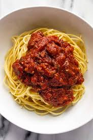

Spaghetti
Go Home

Description
Yummy italian noodles with tomato sauce and beef bolognese.
Ingredients
- Uncooked spaghetti noodles
- Beef bolognese sauce
Instructions
- Boil the spaghetti noodles in a pot according to the instructions on the packaging.
- In a saucepan, put the heat on medium and add the desired amount of beef sauce, heating for 12 minutes.
- Drain the water from the boiled spaghetti, leaving half a cup of the residual spaghetti water.
- Mix the spaghetti water into the beef sauce, cooking for an additional 3 minutes on medium heat.
- Put the noodles onto a serving plate, and then pour the sauce on the noodles.